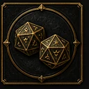
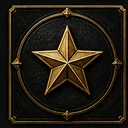
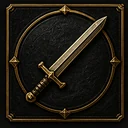
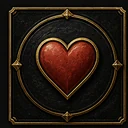
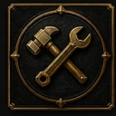

Persönliche Notizen
Chronik von Eldanor
☝ Ziehen · 🤏 Zwei Finger zoomen · zweimal tippen: 200 % / Gesamtansicht
Die fünf Regionen
ValenmarkKronfels · Wolfheim · Alderhain · Kastel
Freie KüstenMeridia · Rastell · Große Bucht
FinsterwaldDornhain · Hain der Alten
SkarnheimFrosthall · Tannenheim · Khardum
GlutsteppeAsharra · Zeraka · Akarion
W20
20
Wähle einen Würfel
Bereit.

Wurfverlauf
ProbeW20 + Attributsmodifikator + ggf. Übungsbonus gegen die Schwierigkeit.
10 leicht12 normal15 schwer18 sehr schwer
Vorteil / Nachteil
Vorteil: 2W20, der höhere zählt. Nachteil: 2W20, der niedrigere zählt.

KampfInitiative → bewegen + Aktion → Angriff gegen RK → Schaden.
Natürliche 20 = kritischer Treffer. Natürliche 1 = Angriff misslingt.

0 HPTodesrettungswürfe: 3 Erfolge stabilisieren, 3 Fehlschläge bedeuten Tod.
Attribute

FertigkeitenEine Fertigkeit nutzt ein Attribut. Ist dein Held geübt, kommt der Übungsbonus dazu.
Angriff & Schaden
Angriffswurf erreicht die RK des Ziels → Treffer. Danach Schaden würfeln.
Stufenaufstieg
Übungsbonus steigt automatisch. Auf Stufe 4, 8, 12, 16 und 19: je 2 Attributspunkte, maximal 20.
Charakterwahl
Jederzeit wieder zum Startbildschirm mit allen Helden.